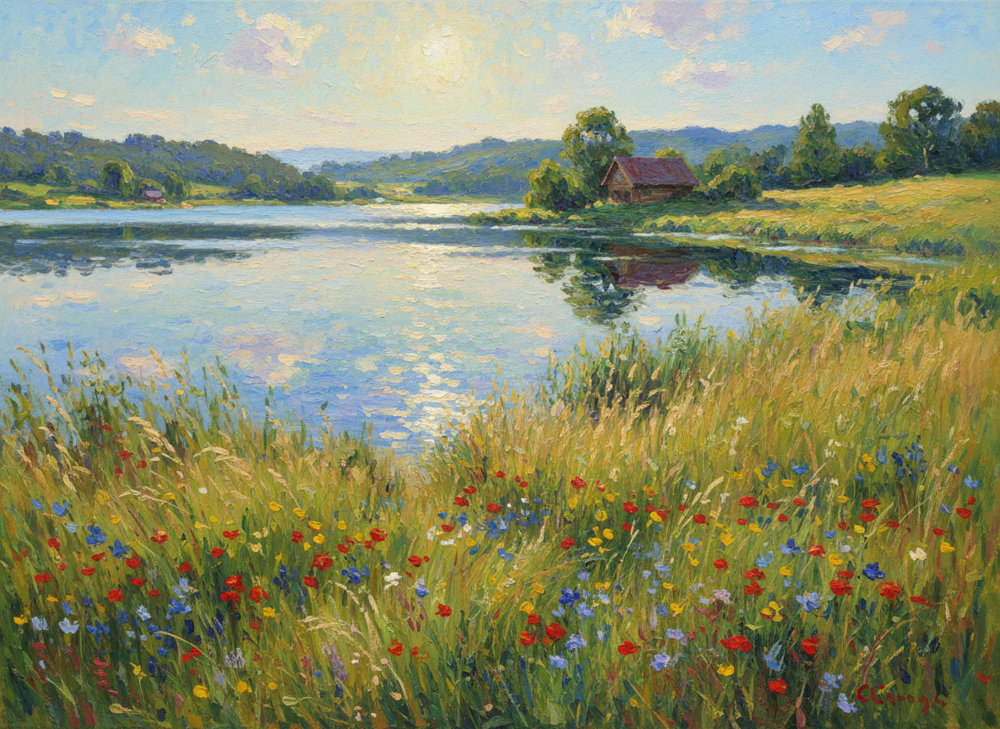
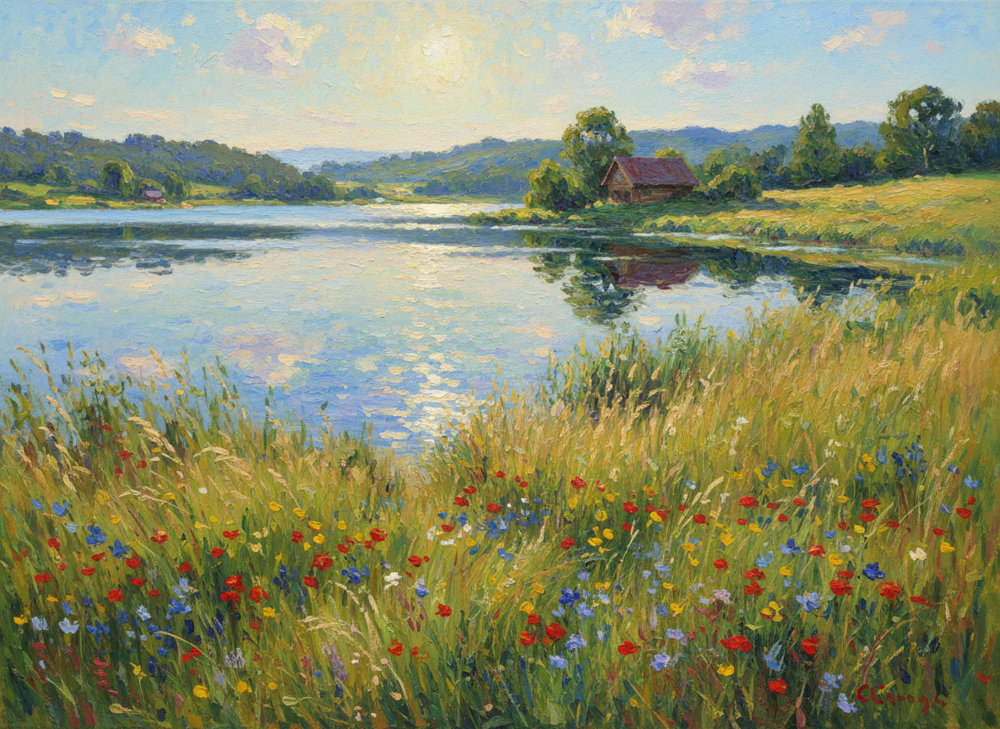
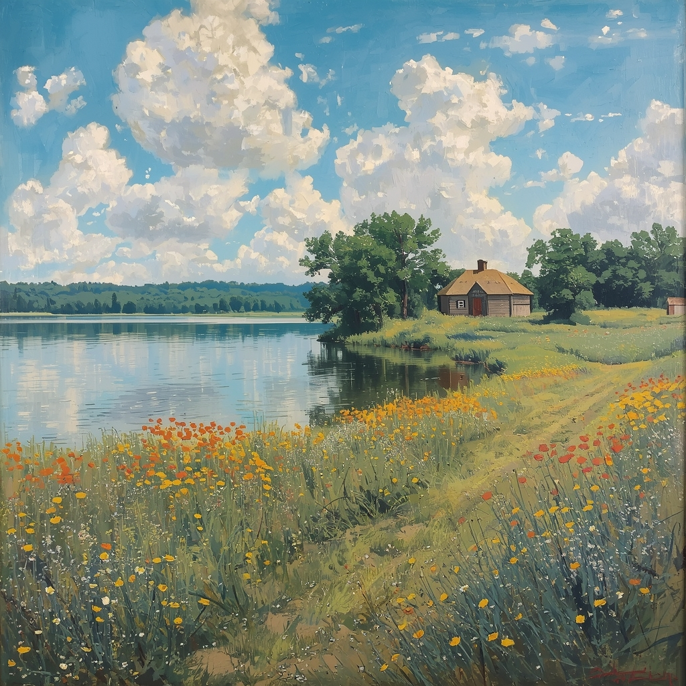
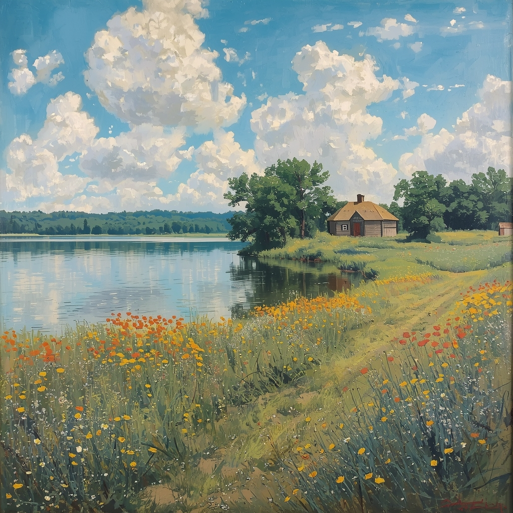

 

What I Tried
Tools explored, experiments run, what you were trying to discover...
What Happened
What worked, what didn't, what surprised you...

What I Learned
Insights about how tools work, assumptions or biases noticed, unanswered questions...
Looking Forward
How you might use or avoid AI tools, questions for evaluating new tools...